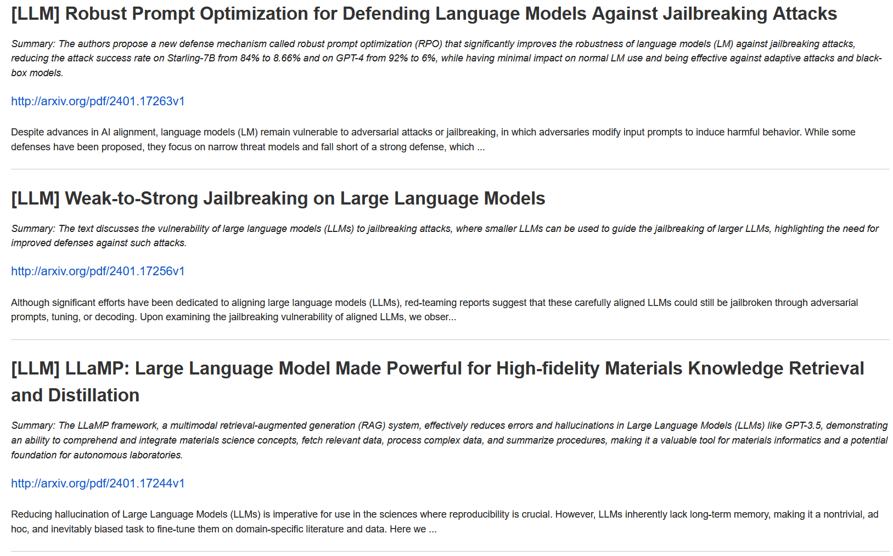

Usage
Below, a simple example of how to run SciWatch for monitoring LLM, document augmentation, and Active Learning papers, and blogs.
Setup senders
See Senders.
Create a configuration file
Lets suppose we named the file scrapping_config.toml.
title = "LLM & AL Watch" # Will be used as email title
end_date = "now" # will search content up to now (exec. time)
time_delta = "02:00:00:00" # will look for content up to two days ago
recipients = ["aghiles.ahmed.azzoug@gmail.com"]
# define your queries
[[query]]
title = "LLM" # LLM query
raw_content = """intitle:(GPT* OR LLM* OR prompt* OR "Large language models"~2) AND incontent:(survey OR review OR evaluation* OR benchmark* OR optimization*)"""
[[query]]
title = "AL" # Active Learning on VRD (or benchmarks/surveys)
raw_content = """intitle:("active learning") AND incontent:(VRD OR documents OR survey* OR benchmark*)"""
# define your sources
[[source]]
type = "arxiv" # check for Computer Science papers on Arxiv
use_abstract_as_content = true
search_topic = "cs"
max_documents = 500 # should be one of 25, 50, 100, 250, 500, 1000, 2000
[[source]]
type = "openai_blog" # check for latest blogs on OpenAI blog (mainly for GPT updates)
max_documents = 20
[[source]]
type = "reddit"
sub_reddits = ["ChatGPTJailbreak", "PromptEngineering"]
min_submission_score = 2
max_documents_per_sub_reddit = 10
For more information about query syntax see Query syntax.
Run the watcher
from sci_watch.sci_watcher import SciWatcher
watcher = SciWatcher.from_toml("scrapping_config.toml")
watcher.exec() # if some relevant content is retrieved, recipients will receive an Email
You might get an email like this:
{kind=link}
Tip
You can run your code through Crontab and receive daily (or weekly) updates!